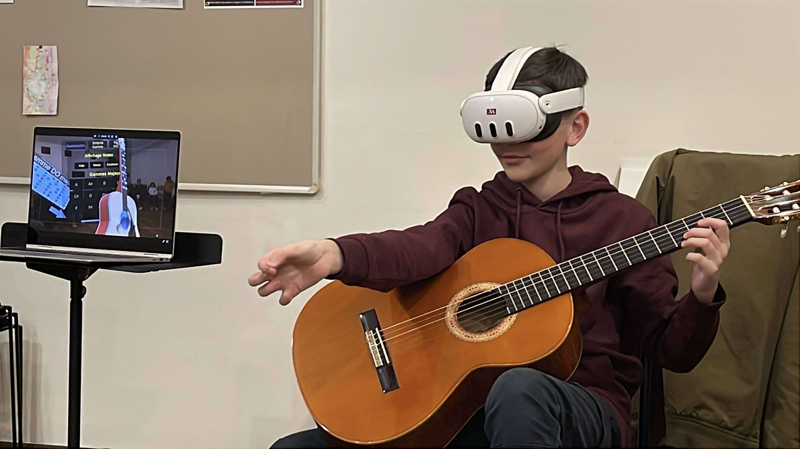
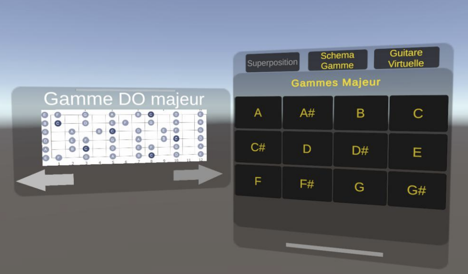
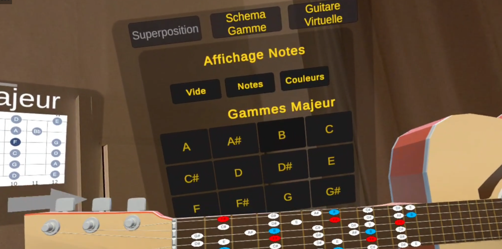
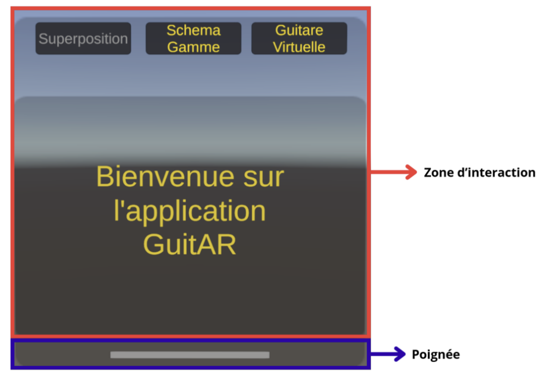
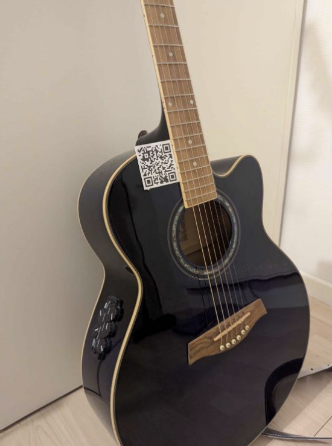
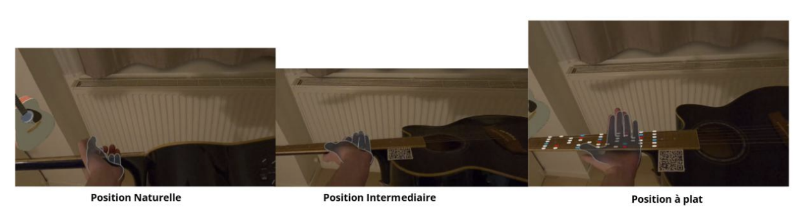
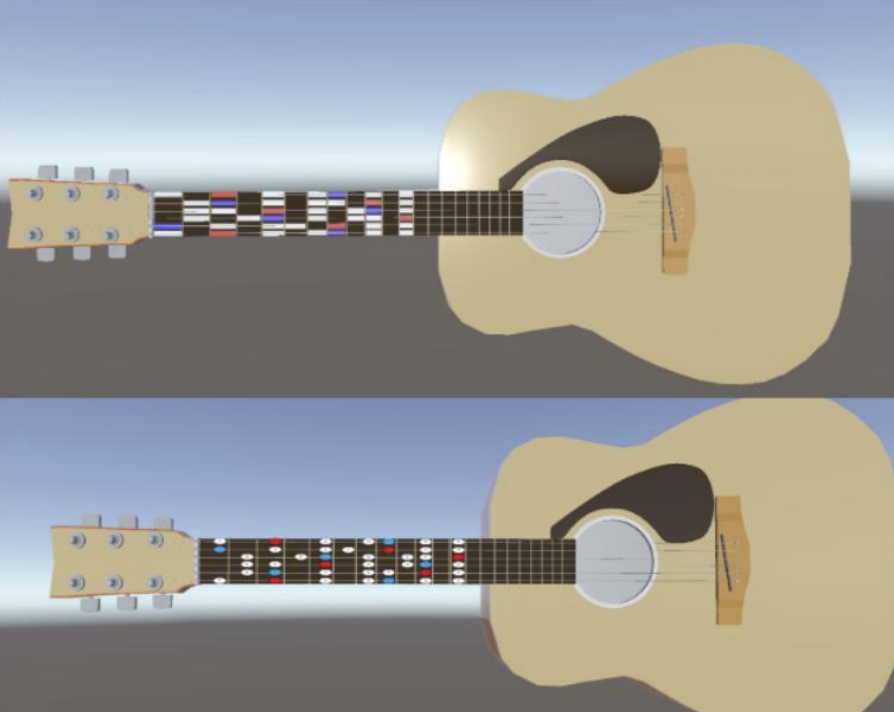
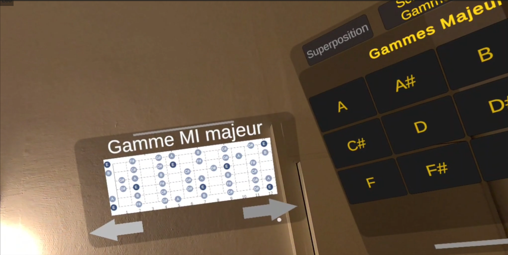

Application de réalité augmentée conçue pour faciliter l'apprentissage intuitif des gammes à la guitare grâce au suivi des mains.

Établissement d'enseignement artistique. Ce projet a été mené en collaboration directe avec le Conservatoire pour concevoir un outil pédagogique innovant, pensé par et pour des musiciens.
Ce projet s'inscrit dans le cadre d'un Master et a été réalisé en étroite collaboration avec le Conservatoire de Musique du Grand Chalon, et plus particulièrement avec le professeur-chercheur M. Hackerman.
L'objectif de cette recherche appliquée était d'expérimenter l'utilisation de la réalité augmentée comme nouvel outil pédagogique pour l'apprentissage des gammes à la guitare, en s'affranchissant des limites des partitions papier traditionnelles.
Une application de réalité augmentée a été développée, permettant à l'utilisateur de visualiser des schémas de gammes et de les déplacer librement dans son champ de vision. Cela représente un avantage ergonomique majeur par rapport à une simple feuille de papier posée sur un pupitre.
De plus, pour faciliter l'apprentissage visuel, il est possible d'afficher ces gammes directement sur une guitare virtuelle 3D. L'utilisateur peut ainsi voir "en miroir" le placement exact des doigts et le reproduire sur sa propre guitare. Pour des raisons pratiques et d'immersion, l'application exploite le suivi des mains, libérant totalement le musicien des manettes.

L'objectif initial prévoyait également le suivi en temps réel d'une véritable guitare physique pour y superposer directement les notes en surimpression. Des tests ont été menés à l'aide de QR codes placés sur l'instrument, mais n'ont pas été totalement concluants dans le temps imparti.
Enfin, cette expérimentation a permis de mettre en évidence certaines limites matérielles pour ce cas d'usage précis. Les défis liés à la résolution des caméras Passthrough pour lire des détails fins, ainsi que la légère latence perçue lors de mouvements de jeu rapides, ont notamment été documentés.

Conception d'une interface utilisateur manipulable intuitivement avec les mains, comme pincer pour attraper ou faire glisser pour déplacer. L'utilisateur interagit avec des panneaux flottants contenant les gammes, sans jamais avoir besoin de lâcher sa guitare pour reprendre une manette.

Recherche et implémentation de solutions pour le suivi d'une guitare physique dans l'espace. Plusieurs approches ont été expérimentées, avec et sans l'utilisation de QR codes et de marqueurs fiduciaux, pour tenter d'ancrer les hologrammes directement sur le manche de l'instrument en mouvement.



